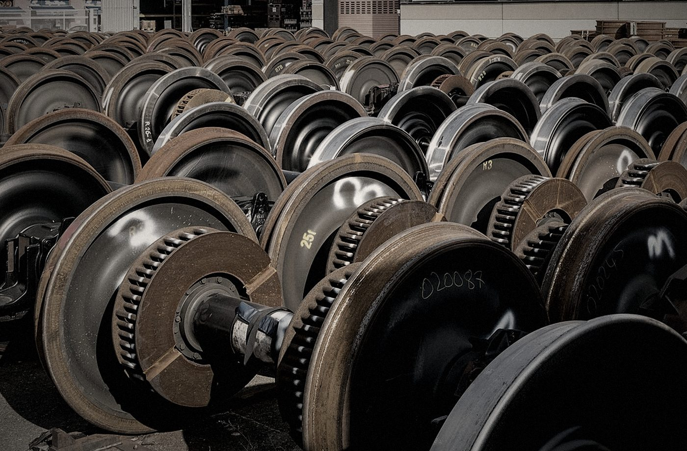
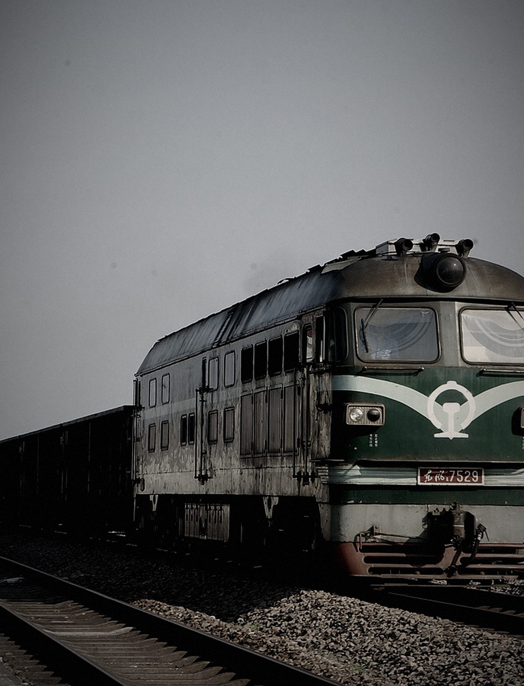

TIANJIN VEHICLE DEPOT · 15TH ANNIVERSARY
十五载砺剑 一路向前
天津车辆段建段十五周年主题数字纪念册
从一列列货车的安全启程
到一个个普通岗位上的默默坚守
十五年，
岁月留下的足迹
十五年，足以让一条道路不断延伸。
十五年，也足以见证一座车辆段的成长与蜕变。
时间轴继续向前
而每一步，都由认真写下
十五年的
奋进答卷
从安全底线到运输保障，从检修能力到技术创新，再到管理提升——五个维度，共同拼出一座车辆段向前生长的轨迹。
本板块为内容框架演示。所有成果与数据须由段内业务部门核实后补充，不展示未经确认的数字。
平凡岗位，
不凡坚守
一列货车的安全运行，离不开每一个岗位的认真检查。
在车辆段，有这样一群人：他们手持点检锤，穿梭在一列列货车之间，用一次次检查排查故障隐患，用日复一日的坚守守护运输安全。

场景示意 · 非真实历史影像轻触画面中的 检车锤、轮对 与 作业身影，查看岗位细节
一锤一检，敲响的是责任。
一车一查，守护的是安全。
师徒之间，
薪火相传
技术需要传承，责任需要延续。
一代人有一代人的坚守，一名师傅有一名师傅的担当。

初入岗位 · 示意师傅传授的不只是技术，更是责任。
徒弟接过的不只是一把检车锤，更是一份沉甸甸的担当。
关键时刻，
冲锋在前
越是任务艰巨，越能看见责任。
越是关键时刻，越能彰显担当。
横向滑动 · 点击进入专题
本板块场景为示意画面；具体任务、人物与成果请以段内审核材料为准。
下一程，
继续出发
十五年，是奋斗的见证。
也是新的起点。
- 01
坚守安全底线，筑牢安全生产防线。
- 02
立足检修岗位，持续提高车辆检修质量。
- 03
坚持创新驱动，提升技术和设备保障能力。
- 04
加强人才培养，建设高素质职工队伍。
- 05
深化班组建设，凝聚团队发展合力。
- 06
立足岗位实际，以实干推动天津车辆段高质量发展。
十五载砥砺奋进
下一程再启新篇
TO EVERY STRIVER
十五载同心同行
新征程再创辉煌
致敬每一位坚守岗位的天津车辆人！
致敬每一位为铁路事业默默奉献的奋斗者！
天津车辆段建段十五周年
致敬画面示意 · 请替换为真实职工集体合影十五年，
我们共同走过
下一程，让我们继续同行。
内容真实性校核说明 展开查看
本作品为完整可运行的视觉与交互演示版。以下内容仍需天津车辆段审核后替换：
- 建段年份、重大历史节点与发展沿革
- 运输、检修、安全生产等统计数据
- 技术创新成果、荣誉与重要工作成果
- 职工姓名、人物事迹、师徒故事
- 所有真实历史照片、现场照片及影像版权
当前页面中的工业场景均为版式示意，不作为天津车辆段真实历史资料使用。
影像来源与版权说明 展开查看
当前示意影像来自 Wikimedia Commons，经裁切、调色与压缩，衍生影像依原许可使用。画面中的地点、人物与设备均不代表天津车辆段。
- MNXANL：货运列车、货场及铁路线路影像
- Windmemories：罐车货运列车影像
- JoachimKohler-HB：轮对检修与存放场景影像
- Dietmar Rabich：铁路线路与晨雾场景影像
- NFarras：轮对检修场景影像
许可：CC BY-SA 4.0。正式发布时，请以天津车辆段授权实拍替换，并同步更新本条说明。